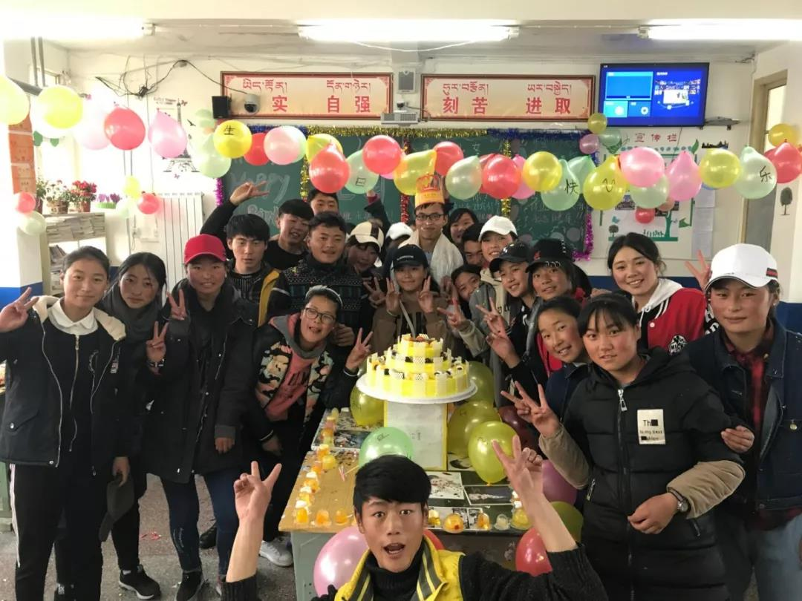
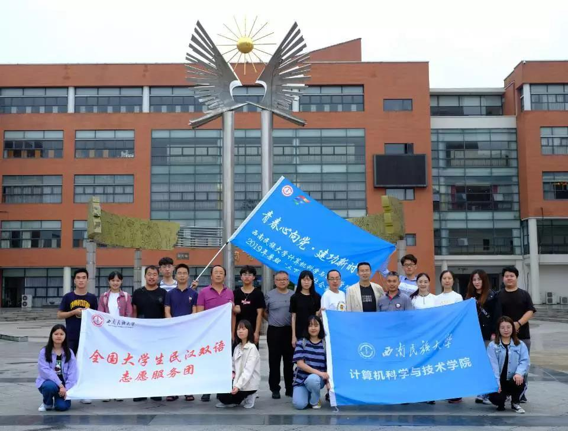
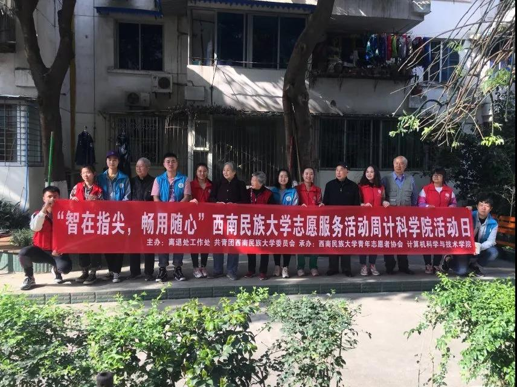

运营活动
运营活动  志愿活动
志愿活动  教育活动
教育活动  党建活动
党建活动  体育活动
体育活动 志愿活动

他们用一年青春换高原孩子一人梦想
10月17日是我国第六个扶贫日，也是第二十七个国际消除贫困日。一直以来，西南民族大学研支团攻坚克难，为西部地区扶贫助教贡献着自己的力量。历届研支团以青春和爱心浇灌梦想的种子，守护青春之花绚丽绽放。西南民族大学自2015年加入中国青年志愿者扶贫接力计划研究生支教团项目以来，连续5年向红原县派遣支教21名志愿者赴当地开展为期一年的基础教育志愿服务工作，并结合当地实际，整合社会资源，

计科学院“精准扶贫一对一，共奔小康心连心”盐源扶贫
为深入学习贯彻落实习近平新时代中国特色社会主义思想和党的十九大精神，引领教育广大青年学生切实感受新中国成立70周年取得的巨大成就，秉承西南民族大学 “为少数民族服务，为少数民族地区服务” 的宗旨。2019年7月8日，由计算机科学与技术学院分党委书记刘跃带队，学生暑期社会实践团组成的“精准扶贫一对一，共奔小康心连心”盐源扶贫暨社会实践团队整装待发，前往四川省凉山州盐源县，开展对口帮扶活动和“不忘初心，牢记使命”主题教育活动

“智在指尖，畅用随心”——计科学院志愿服务活动日
孟子有言：“谨痒序之教，申之以孝悌之义，颁白者不负戴于道路矣。”孝敬风雨耕耘数十载的老教师们，亦是如今民大学子义不容辞的责任。计科学院青志部和校青协同学于3月29日前往老校区为退休教职工进行了智能手机使用方法的培训。志愿者们首先来到了武侯校区老干部活动中心，为老教师们进行了电子产品使用方法的培训。在培训结束后，志愿者们对老师们的问题进行了解答。